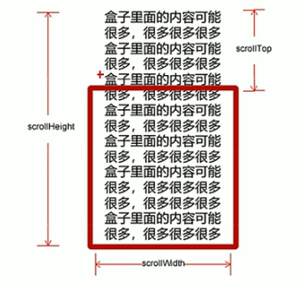

JS杂项知识记录
这篇文章仍处在更新当中。
JS基础
类型
- 基础数据类型
最新的 ECMAScript 标准定义了 8 种数据类型,分别是stringnumberbigintbooleannull(typeof null返回结果为object)undefinedsymbol(ECMAScript 2016新增)
所有基本类型的值都是不可改变的。但需要注意的是，基本类型本身和一个赋值为基本类型的变量的区别。变量会被赋予一个新值，而原值不能像数组、对象以及函数那样被改变。
- 引用类型
Object（包含普通对象-Object，数组对象-Array，正则对象-RegExp，日期对象-Date，数学函数-Math，函数对象-Function）
基本数据类型会放在栈上，引用类型放在堆上
函数的参数传递
- 基本数据类型的参数传递
1 | function fn(a) { |
fn的，是变量x的一个复制（值拷贝）。因此尽管函数体内部该变量发生变化，原变量x不发生改变。
- 引用类型的参数传递
1 |
|
变量的作用域
局部和全局变量
1 | var p = 0; |
- 局部变量只在函数内部生效
- 当局部变量与全局变量重名时，对变量的修改只对局部变量生效
- 未声明在函数内部赋值的变量属于全局变量（即函数外可调用）
- 函数的形参也是局部变量
作用域链
1 | var num = 1; |
JS的预解析
1 | // 1.先向控制台打印变量，后声明该变量并赋值 |
JS解释器在执行js脚本时，会先进行预解析，然后进行代码执行。
(1)预解析将所有var声明的变量以及function提升至当前作用域的最前面。
(2)按照预解析后的顺序依次执行。
预解析分为变量预解析和函数预解析。
(1)变量预解析将变量的声明放在最前方。不涉及变量赋值
(2)函数预解析将函数声明所创建的函数放在最前方。不涉及函数表达式创建的函数
因此，上面的代码实际执行顺序如下：
1 | var num; |
DOM：文档对象模型
基础概念
- 文档
- 一个页面就是一个文档，DOM中用document表示
- 元素
- 页面中所有标签都是元素，DOM中用element表示
- 节点
- 网页中的所有内容都是节点（标签 属性 文本 注释等），DOM中用node表示
DOM把以上内容都看做是对象
获取元素
document.getElementById- 参数:id字符串
- 返回文档中拥有特定ID的元素，不存在则返回Null
- 返回值为一个 Element 对象
document.getElementsByTagName- 参数:标签类名字符串
- 返回某类标签 集合 ，以伪数组形式存储，不存在则返回空的伪数组
- 指定父元素：element.getElementsByTagName('Tag name')
document.getElementsByClassName- 根据类名返回元素对象 集合
document.querySelector- 根据指定选择器返回第一个元素对象
- 选择器需要加符号 . #
document.querySelectorAll- 根据指定选择器返回所有元素对象集合
- 选择器需要加符号 . #
document.body- 获取body元素
document.documentElement- 获取html元素
事件基础
事件：可以被JavaScript侦测到的行为。
- 事件三要素
- 事件源 事件被触发的对象
- 事件类型 如何触发（什么事件）
- 事件处理程序
常见鼠标事件
| 鼠标事件 | 触发条件 |
|---|---|
onclick |
点击左键 |
onmouseover |
鼠标经过 |
onmouseout |
鼠标离开 |
onfocus |
获得鼠标焦点 |
onblur |
失去鼠标焦点 |
onmousemove |
鼠标移动 |
onmouseup |
鼠标弹起 |
onmousedown |
鼠标按下 |
事件高级
- 绑定 / 注册事件
- 以上给元素添加事件的方式（利用on开头的事件）是传统方式注册事件
- 特点：唯一性，同一个元素的同一事件只能设置一个处理函数，后注册的处理函数会覆盖前面注册的
- W3C标准推荐使用方法监听注册方式
- addEventListener()是一个方法
- IE9以前不支持此方法，可使用attachEvent()方法代替
- 特点：同一个元素同一事件可以注册多个监听器
eventTarget.addEventListener(type, listener, [useCapture])- type: 事件类型字符串
- listener: 事件处理函数
- useCapture: 可选参数，默认为false
- 以上给元素添加事件的方式（利用on开头的事件）是传统方式注册事件
- 解绑事件
- 传统方式绑定的事件解绑: on事件 = null;
- 方法监听绑定的事件解绑: removeEventListener()
eventTarget.removeEventListener(type, listener, [useCapture])- type: 事件类型字符串
- listener: 事件处理函数
- useCapture: 可选参数，默认为false
DOM事件流理论
DOM中事件流描述的是从页面中接收事件的顺序。事件发生时会在元素节点之间按照特定的顺序传播，这个传播过程即DOM事件流。
- DOM事件流分为3个阶段
- 捕获阶段：从上至下
- 当前目标阶段
- 冒泡阶段：从下至上
- 实际开发中很少使用事件捕获，更关注事件冒泡
- onblur onfocus onmouseenter onmouseleave 事件等没有冒泡
例子：
1 | <div id='event'> |
1 | #event { |
1 | var f1 = document.querySelector('#father1'); |
效果：
事件对象
- 监听函数的形参
- 事件对象只有存在事件才会存在，系统自动创建
- 事件对象中包含了与事件相关的数据 属性 方法等
e.target: 返回触发事件的对象- this: 返回绑定的对象，注意区别
e.type: 事件类型e.preventDefault()阻止默认事件，比如禁止链接跳转- return false; 也可以阻止默认事件，但仅限于传统注册方式
e.stopPropagation()阻止事件传播
- 鼠标事件对象 MouseEvent
e.clientX / elientY相对浏览器窗口可视区的X Y坐标e.pageX / pageY相对文档页面的X Y坐标e.screenX / screenY相对电脑屏幕的X Y坐标
事件委托
- 原理：不为每个子节点单独设置事件监听器，而是设置在父节点上，然后利用冒泡原理影响设置每个子节点(e.target)
- 作用：只操作了一次DOM，提高性能
更多的鼠标 / 键盘事件
- contextmenu
- 控制何时应该显示上下文菜单，比如屏蔽右键菜单可以通过阻止默认事件进行
- selectstart
- 开始选中，阻止默认事件可以禁止鼠标选中文本
- keyup
- 按键松开时触发
- keydown
- 按键按下时触发
- keypress
- 按下时触发，但不识别功能键
键盘对象的属性：
e.key- 按下键的字符串
e.keyCode- 按下键的ASCII码值
- keyup / keydown不区分大小写，keypress区分
操作元素
改变元素内容
element.innerTextelement.innerHTML- 两者都能对元素内的文本内容进行读写操作，但是前者会忽略掉元素内的所有HTML标签以及源代码中的换行与空格。
示例：分时问候
1 | <div id='changeContent'></div> |
1 | #changeContent { |
1 | var div = document.querySelector('#changeContent'); |
效果：
改变元素属性
element.属性名（内置属性 id、src等，可读写）element.getAttribute('属性名')（自定义属性）element.setAttribute('属性名', 值)（主要是自定义属性）element.removeAttribute('属性名')（移除某个属性）
改变表单属性
利用DOM可以操作如下表单元素的属性:
type、value、checked、selected、disabled
示例：显示密码
1 | <input type='password' id='pwd_demo_input'/><button id='pwd_demo_btn'>显示密码</button> |
1 | var input = document.getElementById('pwd_demo_input'); |
效果：
改变样式属性
我们可以通过JS修改元素的大小、颜色、位置等样式
element.style- 行内样式操作
element.className- 类名样式操作，适用于样式较多或者功能复杂的情况
JS中的样式采取驼峰命名法
JS修改style样式操作，产生的是行内样式
示例：修改文本框内容
1 | <input type='text' value='默认' id='inputdemo'/> |
1 | var demo = document.getElementById('inputdemo'); |
效果：
节点操作
DOM树中，一切都是节点。
- 一般地，节点至少拥有nodeType nodeName nodeValue这三个基本属性
- 元素节点 nodeType为1
- 属性节点 nodeType为2
- 文本节点 nodeType为3
node.parentNode获取离元素最近的父节点node.childNodes子节点，包含元素节点 文本节点（因此一般不提倡使用）node.children子元素节点node.firstChild / lastChild第一 / 最后一个 子节点node.firstElementChild / lastElementChild（兼容性问题）第一 / 最后一个 子元素节点- 实际写法：
node.children[0/node.children.length-1]
- 实际写法：
node.nextSibling / previousSibling下一个兄弟节点node.nextElementSibling / previousElementSibling下一个兄弟元素节点document.creatElement('tagName')创建元素节点node.appendChild(child)添加节点至node节点结尾node.insertBefore(child, 位置)添加节点至node节点指定位置之前node.removeChild(child)删除节点node.cloneNode()复制节点，默认空参数 或者 false 是浅拷贝，不复制里面的内容，为true是深拷贝
- 动态创建元素的三种方法比对
document.write()文档流执行完毕后，此语句会导致页面的重绘element.innerHTML创建大量相同元素时，不要采用字符串拼接的形式，而是采用数组join的形式（性能）。document.createElement创建大量相同元素时，此种方式比上面字符串拼接的方式更快，但是稍慢于数组join，但是语义更清晰
BOM：浏览器对象模型
基础概念
BOM即浏览器对象模型，它提供了独立于内容而与浏览器窗口进行交互的对象，其核心对象是window。
BOM构成
BOM比DOM更大，它包含了DOM
- window 浏览器的顶级对象，它是JS访问浏览器窗口的一个接口。定义在全局作用域中的变量、函数都会变成window对象的属性和方法（即var num => window.num / function fn() => window.fn()）它包含了以下内容：
- document
- location
- navigation
- screen
- history
window对象常见事件
-
窗口加载事件
window.onload = function( ){ }(传统注册方式)
window.addEventListener('load', function( ){ })(监听注册方式)
窗口页面加载事件，当文档内容完全加载完成会触发该事件，有了此事件就可以把JS代码写在页面元素上方。
document.addEventListener('DOMContentLoaded', function( ){ })
仅DOM加载完成，不包括样式表 / 图片 / Flash等 -
调整大小事件
window.addEventListener('resize', function( ){ })
窗口大小发生变化时会触发此事件
利用这个事件可以是实现响应式布局
定时器
setTimeout(回调函数, 延时时间(ms))
设置一个定时器，该定时器在到期后执行调用函数。定时器可能有很多，我们经常给定时器赋值一个标识符。clearTimeout(标识符)
停止定时器setInterval(回调函数, 间隔时间(ms))
反复调用此函数clearTimeout(标识符)
示例：时钟
1 | <div class='timer'> |
1 | .timer { |
1 | let hh = document.querySelector('#hours'); |
效果：
事件循环
JS主线程的执行栈优先执行同步任务，当代码中有异步任务时，会交给相应的异步进程处理，异步进程处理结束后推入异步任务队列。在主线程的执行栈完成同步任务的执行之后，会对任务队列进行轮询，从中取出一个任务，执行任务，随后再获取任务，执行任务。这个过程乘坐事件循环。
location对象
常用属性
location.href获取/设置整个urllocation.host返回主机域名location.port返回端口号location.pathname返回路径location.search返回参数location.hash返回片段 #后面内容
常用方法
location.assign()重定向页面 记录浏览历史，可以实现后退location.replace()替换当前页面 不记录浏览历史location.reload()刷新页面
navigator对象
navigator对象包含有关浏览器的信息，它有很多属性，我们最常用的是userAgent，该属性可以返回由客户机发送服务器的user-agent头部的值。从而实现不同客户端跳转不同页面的功能。
history对象
常见方法
history.forward()前进history.back()返回history.go(n)前进 / 后退 n 步
PC端网页特效
Offset 元素偏移量
element.offsetParent返回作为该元素带有定位的父级元素如果父级都没有定位则返回bodyelement.offsetTop返回元素相对带有定位父元素上方的偏移element.offsetLeft返回元素相对带有定位父元素左边框的偏移element.offsetWidth返回自身包括padding、边框、内容区的宽度，返回数值不带单位element.offsetHeight返回自身包括padding、边框、内容区的高度，返回数值不带单位
offset与style区别
| offset | style |
|---|---|
| offset可以得到任意样式表中的样式值 | style 只能得到行内样式表中的样式值 |
| offset系列获得的数值是没有单位的 | style.width获得的是带有单位的字符串 |
| offsetWidth包含padding+border+width | style.width获得不包含padding和border的值 |
| offsetWidth等属性是只读属性，只能获取不能就值 | style.width是可读写属性，可以获取也可以赋值 |
| 所以，我们想要获取元素大小位置，用offset更合适 | 所以，我们想要给元素更改值，则需要用style改变 |
示例：获取鼠标在盒子内坐标
1 | <div id='offset'></div> |
1 | #offset { |
1 | let offset = document.querySelector('#offset'); |
效果：
鼠标不在div盒子内示例：拖动模态框
1 | <button id='open_modal' disabled>打开模态框</button> |
1 | :root { |
1 | let open_button = document.getElementById('open_modal'); |
效果：
示例：电商平台放大镜
链接
Client 元素可视区
| 属性 | 作用 |
|---|---|
element.clientWidth |
返回自身包括Padding、内容区的宽度，不包括边框，返回数值 |
element.clientHeight |
返回自身包括Padding、内容区的高度，不包括边框，返回数值 |
element.clientTop |
上边框大小 |
element.clientLeft |
左边框大小 |
立即执行函数
- 定义：不需要调用，能够立即执行的函数
- 写法：
(function () {}) ()(function(){}())
- 特点：独立创建了一个作用域，避免变量命名冲突问题
Scroll 元素滚动
移动端网页特效
参见移动端开发
数据存储
sessionStorage
- 特点：
- 生命周期为关闭浏览器窗口
- 在同一个页面下数据可以共享
- 以键值对的形式存储使用
- 方法：
sessionStorage.setItem(key, value)sessionStorage.getItem(key)sessionStorage.removeItem(key)sessionStorage.clear()
localStorage
- 特点：
- 永久，除非手动删除
- 多窗口共享